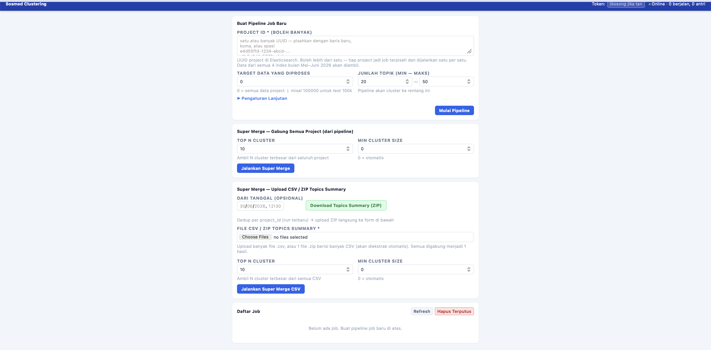

Indonesian Social Media
Text-Clustering System
Making sense of 148K+ noisy Indonesian social media posts at scale
Government ministries and corporate clients needed to understand what people were talking about on social media — at scale, in real time, and in Indonesian, a language with heavy informal slang, code-switching, and abbreviations that break standard NLP pipelines.
The raw data came from three platforms (Twitter, Facebook, Instagram), was highly unstructured, and contained a mix of Indonesian, English, and regional dialects within a single post. The challenge was to surface 20–50 coherent, human-interpretable topic clusters per project run from this noise — automatically, without manual labelling — and serve the results via an API for downstream analytics dashboards.
Production-grade BERTopic pipeline with memory-resilient embedding storage
- Used langdetect and fasttext for language identification to filter and route posts, handling the mixed-language nature of Indonesian social media content before any embedding step.
- Generated multilingual sentence embeddings using LazarusNLP/all-indo-e5-small-v4, a model fine-tuned on Indonesian text, to produce semantically meaningful representations of informal short-form posts.
- Implemented chunked float16 memmap embedding storage to handle large-scale post volumes (148K+) in a memory-resilient way, avoiding out-of-memory errors during batch processing.
- Applied UMAP for dimensionality reduction followed by HDBSCAN-based clustering via BERTopic, producing 20–50 coherent topic clusters per project run with noise points isolated as outliers.
- Integrated LLM-assisted topic labeling to automatically name and rank the largest themes, replacing generic keyword-based labels with human-readable cluster titles.
- Used rake-nltk for keyword extraction within clusters to supplement topic descriptions with representative terms from the raw posts.
- Wrapped the full pipeline in a FastAPI endpoint (served via uvicorn) for downstream consumption by government and corporate analytics clients through the Nolimit platform.
The pipeline successfully processed 148K+ short-form Indonesian social media posts per project run, consistently producing ~49 coherent, human-interpretable topic clusters — including automatic LLM-generated labels for the largest themes. The float16 memmap approach kept memory usage manageable throughout large-batch runs without sacrificing embedding quality.
The system was deployed as a FastAPI service integrated into PT Nolimit Indonesia's analytics platform, serving government ministry clients and corporate accounts with structured topic intelligence derived from unstructured social media data. This project was the most technically complex work of the internship, combining multilingual NLP, unsupervised learning, and production API development into a single end-to-end system.
